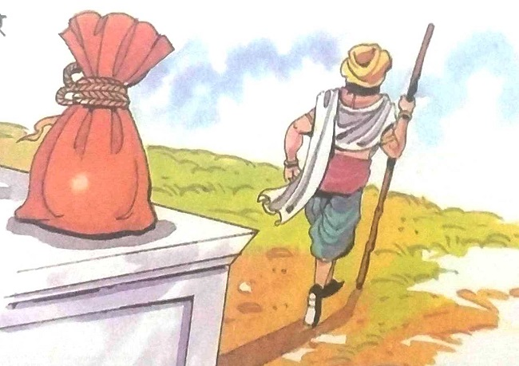

૧૯-રાજાનો નિર્ણય
રાજા વિક્રમાદિત્ય ફરી એક વાર વૃક્ષની નજીક પહોંચી ગયા. તેઓ મૃતદેહને નીચે ઉતારીને તેની
સાથે ચાલ્યા ગયા. રસ્તામાં વેતાલ તેને બીજી વાર્તા કહેવા લાગ્યો-
ઘણા સમય પહેલા રાજા રામ સિંહ પ્રમોદપુર નામના રાજ્ય પર શાસન કરતા હતા. તેણે પોતાના
રાજ્યને બે ભાગમાં વહેંચી દીધું અને તેમની જવાબદારી બે અલગ-અલગ ગવર્નરોને સોંપી. એક દિવસ તેણે
વિચાર્યું કે જઈને જોવું જોઈએ કે સુબેદાર તેની ફરજ બરોબર બજાવે છે કે નહીં. તે વેશમાં ભાગ્યપુરી
ગયો. તેમણે ઘણા લોકોને પૂછ્યું કે ભાગ્યપુરીનો વહીવટ કેવી રીતે ચાલી રહ્યો છે. જવાબમાં સૌએ સુબેદાર
દિવ્યદત્તના વખાણ કર્યા. તેની સામે કોઈએ એક શબ્દ પણ ન બોલ્યો. દિવ્યદત્તના વખાણ કરતા સાંભળીને
રાજાને આશ્ચર્ય થયું. તેઓને લાગ્યું કે ચોક્કસપણે કંઈક ખોટું છે કાં તો લોકો દબાણ હેઠળ જૂઠું બોલે
છે અથવા સુબેદાર દિવ્યદત્ત તેમના વખાણ સાંભળીને આનંદ માણે છે. પોતાની રાજધાની પરત ફરતા રાજાએ પોતાના
જાસૂસોને ભાગ્યપુરી મોકલ્યા અને સુબેદાર દિવ્યદતની દરેક ગતિવિધિ પર નજર રાખવા કહ્યું.
|
થોડા દિવસો પછી ડિટેક્ટીવ ભાગ્યપુરીથી પાછા ફર્યા. તેણે રાજાને કહ્યું,
“મહારાજ!
સુબેદાર દિવ્યદત ખૂબ જ પ્રમાણિક અને કર્તવ્યનિષ્ઠ છે. તે પોતાના વિષયોનું ખૂબ ધ્યાન
રાખે છે. તેઓ
તેમના કલ્યાણ માટે શક્ય બધું કરે છે. તેથી, તેમાં કોઈ શંકા નથી કે લોકો આ જ કારણસર
તેમની પ્રશંસા કરે છે.
રાજા રામસિંહ હજી માનતા નથી. તેથી તે ફરી એકવાર પોતાનો વેશ બદલીને ભાગ્યપુરી ગયો. તેણે વૃદ્ધ માણસનો વેશ ધારણ કર્યો હતો. ત્યાં તેઓ એક ધર્મશાળામાં રોકાયા. સાંજે તેણે ધર્મશાળાના માલિકને કહ્યું, "મારે શહેરની ટૂર પર જવું છે. મારી પાસે સોનાના સિક્કાઓથી ભરેલી બેગ છે, પણ હું તેને મારી સાથે લઈ જવા માંગતો નથી. શું મારે તેને અહીં છોડી દેવો જોઈએ?" |
| ધર્મશાળાના માલિકે કહ્યું, "સાહેબ! દિવ્યદત્તે જ્યારથી આ રાજ્યનો હવાલો સંભાળ્યો છે ત્યારથી અહીં ચોરો-લુંટારાઓનો ડર ખતમ થઈ ગયો છે. તમે ઈચ્છો તો પૈસાની થેલી તમારા રૂમમાં રાખી શકો છો અને તમે ઈચ્છો તો. , તમે તેને સાથે લઈ જઈ શકો છો. ડરવાનું કંઈ નથી." રામસિંહ બેગ સાથે લઈને ચાલ્યો ગયો. તેણે ભાગ્યપુરીના લોકોની પરીક્ષા લેવાનું વિચાર્યું. રસ્તામાં તેને પૈસાની થેલી પ્રતિમા પાસે છોડીને આગળ વધ્યો. તે માંડ માંડ બે ડગલાં ચાલ્યો હતો કે તેણે એક અવાજ સંભળાવ્યો, “થોભો, રાહ જુઓ!” રામ સિંહે પાછળ ફરીને જોયું તો એક સિક્યુરિટી ગાર્ડ પૈસાની થેલી લઈને તેની પાછળ આવી રહ્યો હતો. સિક્યોરિટી ગાર્ડે તેને પૂછ્યું કે તમે આ બેગ ત્યાં કેમ મૂકી ગયા? આ સાંભળીને રામસિંહ અવાચક થઈ ગયા. પછી તેણે તેને કહ્યું, "હું જે પણ કરું તે મારી અંગત બાબત છે. મને આ પ્રશ્ન પૂછનાર તું કોણ છે?" |  |
"હું એક સુરક્ષા ગાર્ડ છું અને અહીંના લોકોની સુરક્ષા કરવાની મારી જવાબદારી છે." જ્યારે
વૃદ્ધ રામ સિંહ ભાગવા લાગ્યો ત્યારે સિક્યુરિટી ગાર્ડે તેની સજા પણ પૂરી કરી ન હતી. સુરક્ષાકર્મીઓ
પણ તેમની પાછળ પડ્યા. પછી વૃદ્ધ માણસ એક પથ્થરને ઠોકર મારીને નીચે પડ્યો. તેના માથા પર વાગ્યો અને
તે બેભાન થઈ ગયો. સુરક્ષા ગાર્ડે અન્ય લોકોને મદદ માટે બોલાવ્યા. તેઓ વૃદ્ધને હોસ્પિટલ લઈ ગયા.
ત્યાં ડૉક્ટરે વૃદ્ધાને તપાસ્યા પછી કહ્યું, “ઘા ઘણો ઊંડો છે. તેને સાજા થવામાં સમય લાગશે.
ડૉક્ટરે મલમ લગાવ્યું અને વૃદ્ધના માથા પર પટ્ટી બાંધી. થોડીવાર પછી વૃદ્ધાને હોશ
આવ્યો. તેમણે કહ્યું, "અહીં સામાન્ય લોકોની સારવાર માટે પણ સારી વ્યવસ્થા છે." આ જાણીને મને ખૂબ
આનંદ થયો. હું અહીં સાર્થક દિવ્યદતને મળવા માંગુ છું. હું તેને મળ્યા વિના અહીંથી નહીં જાઉં."
વૃદ્ધનો સંદેશ દિવ્યાદારને પહોંચાડવામાં આવ્યો. દિવ્યદત્ત વડીલને મળવા આવ્યા.
દિવ્યદત્તે
વૃદ્ધની સુખાકારી વિશે પૂછપરછ કર્યા પછી તેમને પૂછ્યું, “મારે જાણવું છે કે આખરે
રસ્તામાં પૈસાની થેલી કેમ છોડી દીધી?"

|
વૃદ્ધે હસતાં હસતાં કહ્યું, "હું રાજા રામ સિંહ છું. પ્રાંતમાં બધું
બરાબર ચાલી રહ્યું
છે કે નહીં તે જાણવા હું અહીં આવ્યો છું. હું તમારા વહીવટથી ખૂબ જ ખુશ હતો. તમે
લોકોના કલ્યાણ માટે
સારું કામ કરી રહ્યા છો. તમારા કાર્ય પ્રશંસનીય છે."
દિવ્યદત્તે રાજાનો આભાર વ્યક્ત કર્યો. રાજા રામસિંહ રાજધાની પરત ફર્યા અને દિવ્યદત્તને બોલાવ્યા અને એક સારા વહીવટકર્તા તરીકે જાહેરમાં તેમનું સન્માન કર્યું. બીજી તરફ સૌભાગ્યપુરીના સુબેદાર ભાનુવર્માએ તરત જ રાજાની પ્રશંસા મેળવવા માટે પોતાનું વહીવટી કામ સીધું કરવાનો પ્રયાસ કર્યો. વાસ્તવમાં તેમણે લોકોના કલ્યાણ માટે કામ કરવામાં બહુ રસ લીધો ન હતો. તે સુબેદાર પણ બન્યો કારણ કે તે રાણીનો પિતરાઈ ભાઈ હતો. તે હંમેશા રાજા પાસેથી મદદ અને કૃપાની અપેક્ષા રાખતો હતો. ભાનુવર્માએ રાણી સમક્ષ પોતાનો કેસ રજૂ કરતાં દાવો કર્યો, "સૌભાગ્યપુરીના લોકો ખૂબ જ સુખી અને શાંતિપૂર્ણ જીવન જીવી રહ્યા છે. તેમની પાસે બધી ખુશીઓ-સુવિધાઓ છે. આમ છતાં રાજાએ મારું સન્માન કરવાનું વિચાર્યું નહિ. વિચાર બહેન, તમે તેને એક વાર સૌભાગ્યપુરીની મુલાકાત લેવા કહો! ત્યાં આવ્યા પછી તેઓ જાણશે કે હું કેવો સક્ષમ પ્રશાસક છું." |
રાણીએ ભાનુવર્માનો સંદેશ રાજા રામ સિંહ સુધી પહોંચાડ્યો. રાજાએ રાણીને કહ્યું, "ઠીક છે,
હું સૌભાગ્યપુરીના પ્રવાસે જઈશ. પણ તેને જાણ કર્યા વિના હું ત્યાં જઈશ નહિ. જો હું તેને અગાઉથી કહીશ
તો તે વિશેષ વ્યવસ્થા કરશે. તેથી, તે મારા માટે સારું રહેશે. તેને જાણ કર્યા વિના જવું. અમે યોગ્ય
વ્યવસ્થા શોધી શકીશું."
 પછી રાજાએ પોતાના એક અંગરક્ષકને રાજાનો વેશ ધારણ કરવા કહ્યું અને પોતે સેવકનો વેશ ધારણ
કર્યો. બંને
અલગ-અલગ સૌભાગ્યપુરી પહોંચ્યા. ભાનુવર્માએ રાજાના સેવકનું ખૂબ જ ઉષ્માભર્યું સ્વાગત કર્યું. રાજાના
સેવકે શહેરની મુલાકાત લેવાની ઇચ્છા વ્યક્ત કરી. મુસાફરી કરતી વખતે, રાજાએ રસ્તામાં પૈસાની થેલી છોડી
દીધી હતી જે એક સુરક્ષા ગાર્ડ દ્વારા છીનવી લેવામાં આવી હતી. પછી અચાનક રાજાને ઠોકર વાગી અને ઘાયલ
થયો. તેને તાત્કાલિક હોસ્પિટલમાં લઈ જવામાં આવ્યો અને ત્યાં તેને વિશેષ સારવાર આપવામાં આવી.
પછી રાજાએ પોતાના એક અંગરક્ષકને રાજાનો વેશ ધારણ કરવા કહ્યું અને પોતે સેવકનો વેશ ધારણ
કર્યો. બંને
અલગ-અલગ સૌભાગ્યપુરી પહોંચ્યા. ભાનુવર્માએ રાજાના સેવકનું ખૂબ જ ઉષ્માભર્યું સ્વાગત કર્યું. રાજાના
સેવકે શહેરની મુલાકાત લેવાની ઇચ્છા વ્યક્ત કરી. મુસાફરી કરતી વખતે, રાજાએ રસ્તામાં પૈસાની થેલી છોડી
દીધી હતી જે એક સુરક્ષા ગાર્ડ દ્વારા છીનવી લેવામાં આવી હતી. પછી અચાનક રાજાને ઠોકર વાગી અને ઘાયલ
થયો. તેને તાત્કાલિક હોસ્પિટલમાં લઈ જવામાં આવ્યો અને ત્યાં તેને વિશેષ સારવાર આપવામાં આવી.
આ દરમિયાન એક નોકરના સામાન્ય વસ્ત્રોમાં સજ્જ રાજા રામ સિંહને ચક્કર આવ્યા અને શહેરથી
નીચે પડી ગયા.
તેને પણ આ જ હોસ્પિટલમાં દાખલ કરવામાં આવ્યો હતો. પરંતુ કોઈએ તેમની કાળજી લીધી ન હતી. હોસ્પિટલના એક
કર્મચારીએ કહ્યું, "જો તમને સારી સારવાર જોઈતી હોય તો અહીં માત્ર સુબેદાર અને ઉચ્ચ વર્ગના લોકો જ
સારી સારવાર મેળવે છે."
આ પછી રાજા રામ સિંહ પોતાના મહેલમાં પાછા ફર્યા. તેણે રાણીને ચાઈનો પોતાનો અનુભવ
સંભળાવ્યો અને
કહ્યું, "ભાનુવર્મા એક સારો વહીવટદાર નથી. તે વહીવટની ફરજો યોગ્ય રીતે નિભાવતો નથી. તે તમારો સંબંધી
છે,
તેથી તમે તેને મારી મુલાકાત વિશે અગાઉથી જાણ કરી હશે."
"ના, મહારાજ, મેં એવું નથી કર્યું. મને લાગે છે કે કોઈએ અમારી વાતચીત સાંભળીને તેને
બતાવી દીધી
હશે. હું શોધીને તેને સજા કરીશ," રાણીએ કહ્યું.
"આ બહુ જટિલ બાબત છે. તેણે વિચાર્યું હશે કે તમે તેના કામથી ખુશ થશો અને તેને ઈનામ આપો.
પણ ચિંતા
કરશો નહીં. હું જાણું છું કે શું કરવું જોઈએ," રામ સિંહે કહ્યું. રાજાએ તરત જ દિવ્યદત્તને
સૌભાગ્યપુરી મોકલવાનો આદેશ આપ્યો. અને ભાનુવર્માની બદલી ભાગ્યપુરીના સુબેદારના પદ પર કરવામાં આવી
છે.
વાર્તા સંભળાવ્યા પછી વેતાલાએ કહ્યું, "રાજા! શું આ સાબિત નથી કરતું કે રાજા રામસિંહ
બંને સુબેદારની
યોગ્યતાનું મૂલ્યાંકન કરવામાં નિષ્ફળ ગયા? શું તેમણે બંને સુબેદારની બદલી કરીને ભૂલ તો નથી કરી? હવે
મારા પ્રશ્નોના જવાબ આપો, નહીં તો તમે સજા કરવામાં આવશે." ટુકડા કરવામાં આવશે."
રાજા વિક્રમાદિત્યએ કહ્યું, "રાજા રામ સિંહનો નિર્ણય ભાગ્યપુરી અને સૌભાગ્યપુરી બંનેના
લોકોના
હિતમાં હતો. દિવ્યદત્તના નેતૃત્વમાં ભાગ્યપુરીએ ઘણી પ્રગતિ કરી, જ્યારે ભાનુવર્માએ સૌભાગ્યપુરી પર
ધ્યાન આપ્યું ન હતું. તેમની બેદરકારીને કારણે જનતાએ કદી દીર્ઘદ્રષ્ટિ કરી ન હતી. તેની સામે થઈ. રાણી
પણ પોતાનો અવાજ ઉઠાવી શકતી હતી. આ જાણીને રાણીએ રાજાના નિર્ણયને સમર્થન આપ્યું. રાજા ઈચ્છતા હતા કે
દિવ્યદત્ત સૌભાગ્યપુરીનો વિકાસ કરે. તેથી જ રાજાએ બંને સુબેદારની બદલી કરી."
વિક્રમાદિત્યના જવાબથી વેતાલ રાજા સંતુષ્ટ થયો. પરંતુ રાજાએ તેનું મૌન તોડ્યું હોવાથી
તે પાછો ઉડી
ગયો અને તે જ ઝાડ પર લટકી ગયો.